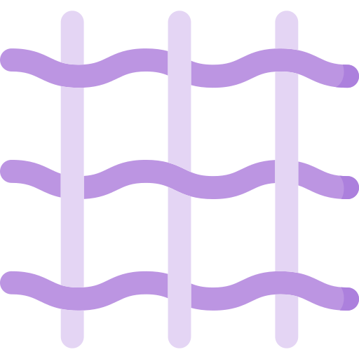

<ion-tabs #tabs (ionTabsDidChange)="handleTabsChange($event)">
  <ion-tab-bar slot="bottom" class="tab-bar">
    <ion-tab-button tab="main">
      <!-- <ion-icon name="home-outline"></ion-icon> -->
      <ion-label>main</ion-label>
    </ion-tab-button>
    <ion-tab-button tab="yarn">
      <!-- 
       -->
      <ion-label>yarn</ion-label>
    </ion-tab-button>
    <ion-tab-button tab="pattern">
      <!-- 
       -->
      <ion-label>pattern</ion-label>
    </ion-tab-button>
    <ion-tab-button tab="community">
      <!-- <ion-icon name="chatbubbles-outline"></ion-icon> -->
      <ion-label>community</ion-label>
    </ion-tab-button>
  </ion-tab-bar>
</ion-tabs>
